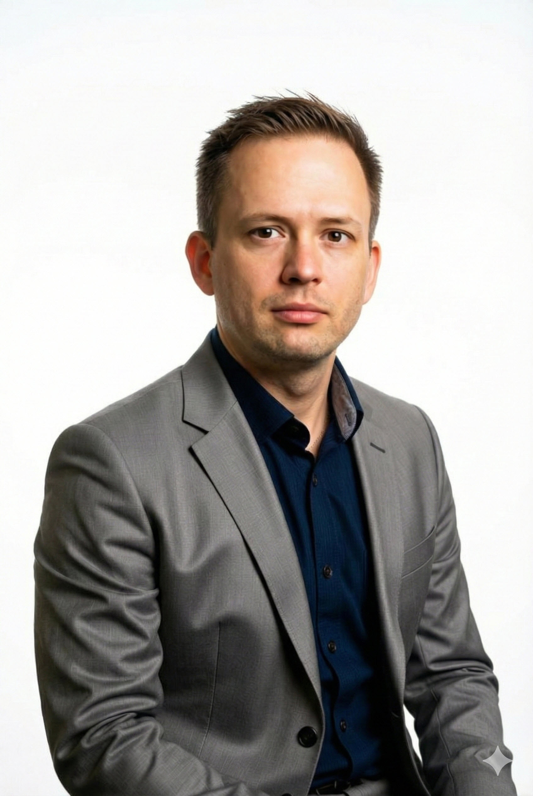

I'm Jose "Joey" Diaz — an enterprise Apple & mobility architect and lifelong end-user advocate. I take unfamiliar platforms and turn them into governed, humane systems people never have to think about. I don't crave control; I crave results.

Minneapolis · open to SF Bay AreaSimon Sinek's Golden Circle taught me something that stuck for fifteen years: people invest in why you do the work, not just what the work is. It's more rewarding, and far more stable, to serve people who believe what you believe than to sell to people who don't.
My jobs have changed. The belief hasn't: technology should be so easy, advanced, and convenient that the person using it never has to think about it — and someone should always be fighting for that person. Enterprise IT too often forgets who it's for. I don't.
A decade-plus in enterprise IT, built on two decades of technology and operations. Open any role for the detail — closed, it stays scannable.
Nothing on a résumé stands alone. Pick an experience and watch which strengths it quietly feeds — or pick a strength and trace it back to where it came from.
Click a credential to view the certificate.
HDI is the issuing body; these are ITIL-based service-management credentials. ITIL foundational training completed in-house during the City's IT insourcing (no separate certificate issued).
If I have a skill that can help and a friend needs it, I use it. For the past two years I've helped local small businesses — most consistently a family-owned Vietnamese restaurant — build a professional presence, from their digital footprint to the physical room. Often at no charge. It's the same belief as the day job: be of service.
Volunteer: Habitat for Humanity International · Wings for Hope / Toys for Tots — since 2012.
Public service let me use these skills for residents. Now I'm after a bigger dent — a team with a belief system guiding its work, where I can get results without waiting on the bottleneck. If that's you, let's talk.
When I started helping them, every ordering service ran on its own separate device — and keeping them all running and updated was a constant fight. Multiple delivery apps, plus the POS, plus Google: a single menu price change meant logging into each system by hand.